▲ 가로수 길을 따라 깃발 행렬이 지나가고 관람객이 지켜보는 장면. 한국관광공사가 '전주 국가유산야행'으로 게시한 사진(촬영 연도 미상) 사진=한국관광공사
전주 한옥마을의 밤은 낮과 다르다. 2026년 10월 2일(금)과 3일(토), 이틀 동안 한옥마을·경기전·풍남문·전라감영 일대가 '천년고도 전주, 역사 속 밤마실'이라는 이름의 국가유산야행 무대로 바뀐다. 관람료는 무료이고, 공식 일정표 기준으로 대부분의 프로그램이 오후 6시에 시작해 오후 10시까지 이어진다.
이 글은 야행 프로그램을 시간대·장소별로 정리하고, 자가용으로 가는 사람이 야간에 어디에 차를 대고 어떻게 움직여야 하는지에 초점을 맞췄다. 한옥마을 주차장 자체의 상세 정보(면수·운영시간)는 전주한옥마을 무료주차장 10곳 정리를 참고하면 된다.
1. "이번엔 하반기 야행입니다" — 일정·장소·운영 정보
전주국가유산야행은 2026년에 두 차례 열린다. 상반기 야행이 6월 5~6일에 열렸고, 이번 10월 2~3일 행사는 '2026년 하반기 전주국가유산야행'이다. 공식 홈페이지는 이 행사를 국가유산청이 선정한 2018년·2023년 '최우수 야행', 한국관광공사 '야간관광 100선'에 이름을 올린 국가유산 활용 프로그램으로 소개한다.
| 항목 | 내용 |
|---|---|
| 기간 | 2026년 10월 2일(금)~3일(토), 2일간 |
| 운영시간 | 18:00~22:00 (공식 홈페이지 기준, 프로그램별로 다름) |
| 장소 | 전주한옥마을, 경기전(완산구 태조로 44), 풍남문, 전라감영(완산구 전라감영로 55) |
| 관람료 | 무료 — 다만 '국가유산 체험 놀이'·'거리의 화공'·'청년 프리마켓'·'야행 개발 상품 판매'는 공식 소개에 유료로 표기(금액은 현장 안내 확인) |
| 슬로건 | '천년고도 전주, 역사 속 밤마실' |
| 구성 | 8개 분야(야경·야로·야사·야화·야설·야숙·야식·야시) 23개 프로그램 |
| 주최·주관 | 국가유산청·전북특별자치도·전주시 / 문화예술공작소(전주국가유산야행 추진단 063-232-9937) |
프로그램과 일정표는 공식 홈페이지에서 확인할 수 있다. 전주국가유산야행 공식 일정표 바로가기
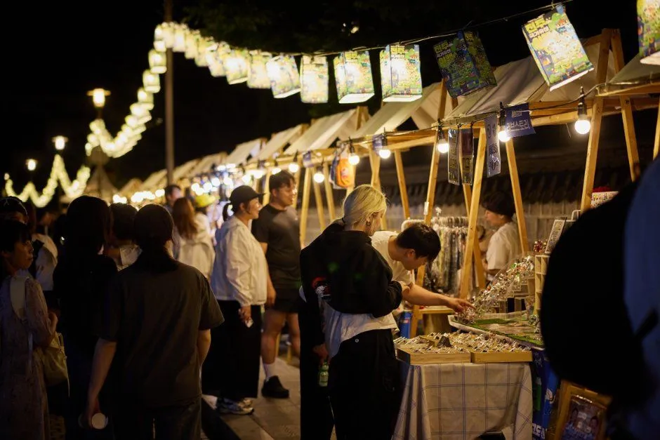
▲ 등불이 걸린 가판대 사이로 관람객이 모인 야행의 야시장 풍경(한국관광공사가 '전주 국가유산야행'으로 게시한 사진, 촬영 연도 미상) 사진=한국관광공사
⚠️ 검색되는 '좀비실록·씨름대회'는 10월 프로그램이 아니다
전주국가유산야행을 검색하면 '경기전 좀비실록', '견훤대왕배 씨름대회', '향교괴담', '국가유산 1박 2일' 같은 유료·예약형 프로그램이 함께 나온다. 이 중 좀비실록과 씨름대회는 6월 5~6일(상반기) 편성으로 소개됐던 프로그램이고, 향교괴담과 1박 2일은 공식 홈페이지 소개 페이지에서 비활성 처리돼 있다. 이 글 작성 시점(9월 29일) 기준 10월 프로그램 소개 페이지와 시간대별 일정표에는 네 프로그램 모두 노출되지 않는다. 이 프로그램을 기대하고 오면 안 되며, 최종 편성은 공식 홈페이지와 현장 안내로 확인하는 것이 안전하다.
2. 17시 30분 행진부터 22시까지 — 시간대별로 뭐가 열리나
야행의 첫 장면은 오후 5시 30분 경기전 입구에서 출발하는 퍼레이드다. 공식 일정표는 '국가유산 천년의 행진'을 17:30~18:00으로 안내하고, 보도자료는 2일 개막 행진이 경기전 입구에서 출발한다고 전했다. 이 행진이 끝나는 6시부터 대부분의 체험·공연 부스가 일제히 열린다.
| 시간 | 프로그램 | 장소 |
|---|---|---|
| 16:00~20:00 | 후백제 왕궁, 산성행(해설 투어, 사전예약. 1일 차 16:00~20:00, 2일 차 17:00~19:00) | 후백제 유적지 일대 |
| 17:30~18:00 | 국가유산 천년의 행진(퍼레이드) | 경기전 입구 출발 |
| 18:00~22:00 | 국가유산 진검승부(역사 게임), 잃어버린 후백제를 찾아서(스탬프투어), 국가유산 이야기술사, 국가유산 보드게임 겨룸, 국가유산 콘서트 '풍류 한마당', 달빛 차회, 풍류 한사발, 청년 프리마켓(유료), 국가유산 빛나는 공간(야간경관·포토존) | 한옥마을 태조로·행사장 일원·경기전 서쪽 돌담길·풍남문·경기전 경내·광장 |
| 18:00~21:30 | 국가유산 올림픽, 전라관찰사의 탄생(단막극 18:30·20:00·21:30) | 전라감영 |
| 정시(18·19·20·21시) | 뜻밖의 국악(회당 약 15분) | 풍남문 |
| 18:10·19:10·20:10·21:10 | 국가유산 전주의 소리를 담다(방짜유기 싱잉볼 명상, 회당 30분) | 경기전 경내 전주사고 |
| 18:30·19:00·19:30·20:00 | 한옥마을 골목길 투어(해설사 동행, 1시간, 사전예약) | 경기전 입구 출발 |
✅ 자동차로 오는 사람이 기억할 시간표
· 17:30 이전 도착이 목표라면 주차는 늦어도 16시대에 끝내는 편이 안전
· 시간 지정 프로그램(싱잉볼·뜻밖의 국악·골목길 투어)은 정시 출발이라 주차장에서 걸어오는 시간을 넣어 계산할 것
· 대부분 프로그램은 22시에 끝나 21시 50분경부터 귀가 차량이 몰릴 가능성이 크다(추정)
3. 경기전 — 야행의 중심 무대, 프로그램 대부분이 여기 모인다
공식 일정표에서 프로그램 밀도가 가장 높은 곳은 경기전과 그 앞 광장이다. 태조 이성계의 어진을 모신 경기전은 전주사고(史庫)까지 갖춘 공간으로, 야행 기간에는 홍살문부터 광장·경내 부속채·돌담길까지 프로그램이 이어진다.
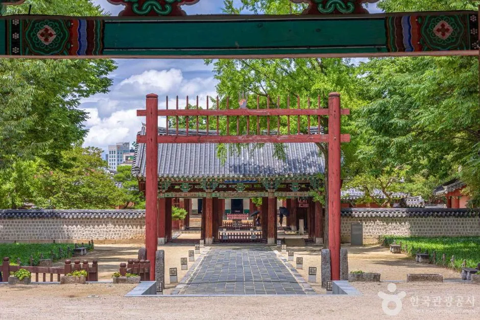
▲ 경기전으로 들어서는 붉은 홍살문과 진입로. 야행 기간 '거리의 화공'은 경내 홍살문 일대에서 진행된다 사진=한국관광공사
| 프로그램 | 내용 | 위치·시간 |
|---|---|---|
| 거리의 화공(유료) | 조선 화공이 그려주는 조선풍 초상화 | 경기전 경내 홍살문 / 18:00~22:00 |
| 국가유산 체험 놀이(유료) | 직접 만드는 체험 놀이터 | 경기전 광장 / 18:00~22:00 |
| 국가유산 달빛 차회 | 오미자 차 위에 고명을 얹어 완성하는 전통 차 체험, 전통떡 만들기, 지역 전통음료 이벤트 | 경기전 경내 부속채·광장 / 18:00~22:00 |
| 국가유산 풍류 한사발 | 전통떡 만들기 체험, 전통주 SNS 이벤트(참여 시 전주모주 제공으로 소개) | 경기전 경내 부속채·광장 / 18:00~22:00 |
| 국가유산 악사들 | 1인 악사들이 전통 악기 선율을 들려주는 공연 | 경기전 경내 부속채 / 18:00~22:00 |
| 국가유산 콘서트 '풍류 한마당' | 전통과 현대가 어우러진 공연 무대(보도자료는 지역 예술인 공모 선발 팀 참여로 소개) | 경기전 광장 / 18:00~22:00 |
| 전주의 소리를 담다 | 방짜유기 싱잉볼 명상, 회당 30분(18:10~18:40 등 4회) | 경기전 경내 전주사고 |
| 태조와 야행이를 만나다 | 야행 마스코트와 사진 이벤트 | 경기전 입구 / 18:00~22:00 |
| 국가유산 이야기술사 | 후백제 역사를 이야기꾼에게 직접 듣는 프로그램 | 경기전 서쪽 돌담길 / 18:00~22:00 |
| 청년 프리마켓(유료)·야행 개발상품 판매(유료) | 청년 마켓, 야행 한정 체험 굿즈 | 돌담길·경기전 광장 / 18:00~22:00 |
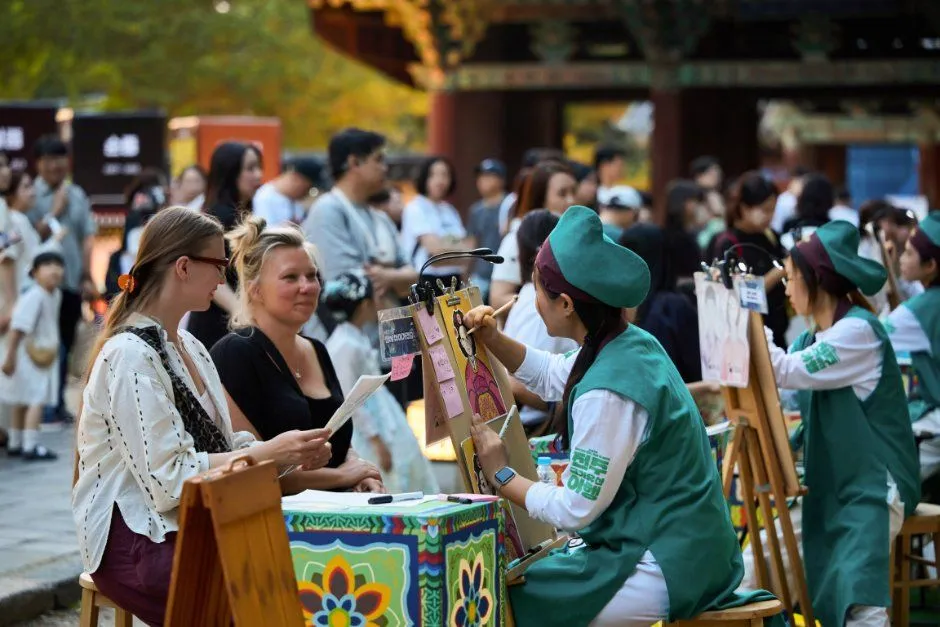
▲ 초록색 옷을 입은 진행 요원과 관람객이 모인 초상화 체험 부스. 한국관광공사가 '전주 국가유산야행'으로 게시한 사진(촬영 연도 미상)으로, 올해 '거리의 화공'과 같은 형태인지는 확인되지 않았다 사진=한국관광공사
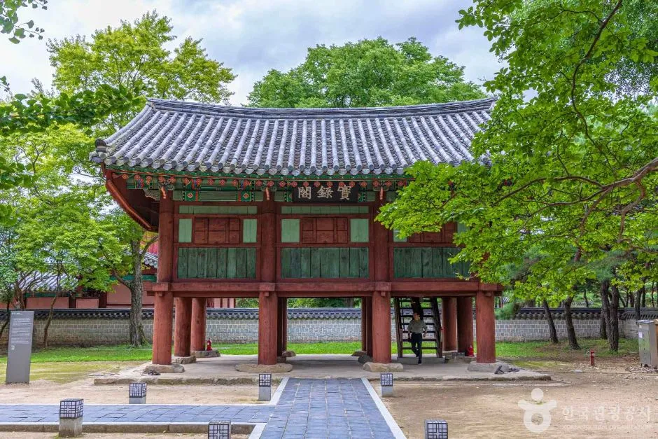
▲ 기와지붕과 붉은 기둥이 어우러진 경기전의 전각. 낮에는 관람객이 오가는 공간이 야행 기간에는 밤 프로그램 무대가 된다 사진=한국관광공사
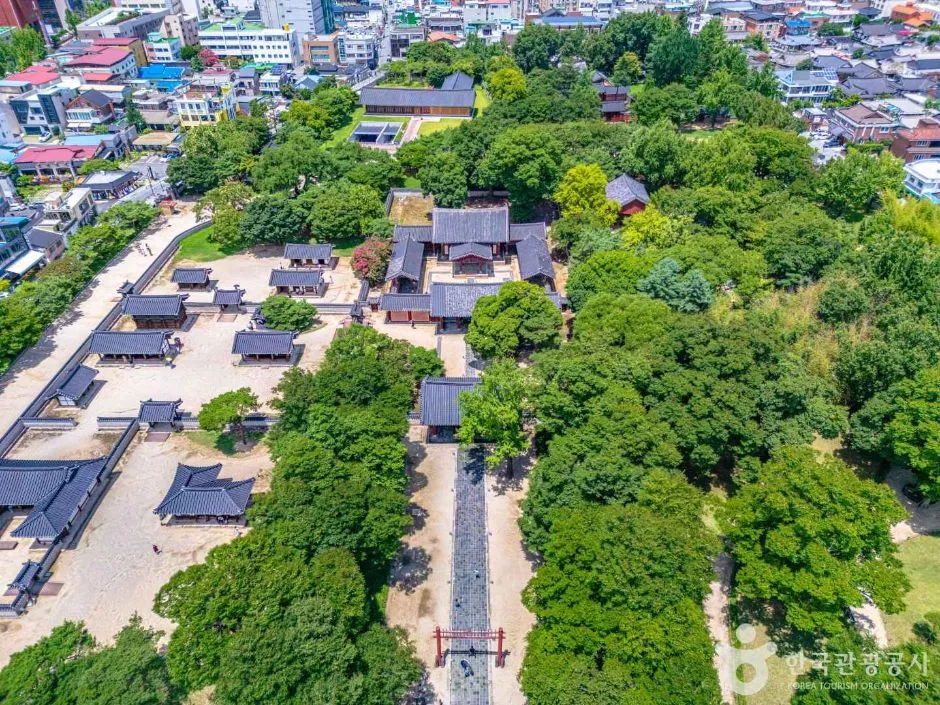
▲ 나무로 둘러싸인 경기전 경내를 내려다본 모습. 야행 동선의 출발점인 경기전 입구는 한옥마을 태조로에 면해 있다 사진=한국관광공사
4. 풍남문·전라감영 — 경기전 밖에서 열리는 프로그램
경기전만 보고 돌아가면 절반만 본 셈이다. 한국관광공사 좌표 기준으로 경기전과 풍남문은 직선 약 230m, 경기전과 전동성당은 약 80m 거리라 프로그램 사이를 걸어서 이동할 수 있다. 전라감영은 별도 좌표 자료가 없지만 공식 안내상 행사장에 포함돼 있다.
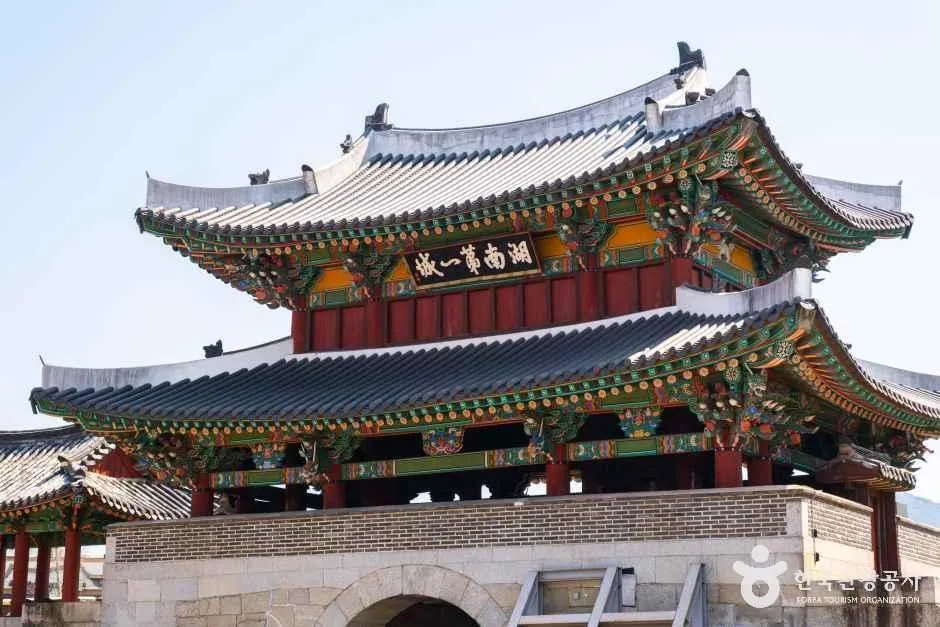
▲ 전주 풍남문. 야행 기간 '녹두꽃의 함성'과 '뜻밖의 국악', 보드게임·환상 낙서장이 이곳에서 열린다 사진=한국관광공사
| 장소 | 프로그램 | 시간 |
|---|---|---|
| 풍남문 | 녹두꽃의 함성 — 동학농민혁명 이야기를 해설·영상·사진으로 | 18:00~22:00 |
| 뜻밖의 국악 — 예고 없이 울리는 국악 공연 | 18·19·20·21시(회당 15분) | |
| 국가유산 보드게임 겨룸 — 고누 등 전통 놀이 대결 | 18:00~22:00 | |
| 국가유산 환상 낙서장 — 크레파스로 그리는 대국민 낙서장 | 18:00~22:00 | |
| 전라감영 | 국가유산 올림픽 — 올림픽 종목을 체험형으로 겨루는 승부 | 18:00~21:30 |
| 전라관찰사의 탄생 — 조선 직업 체험·추억의 놀이와 단막극 | 18:00~21:30 (단막극 18:30·20:00·21:30, 각 10분) |
여기에 후백제 유적지 일대를 걷는 '후백제 왕궁, 산성행'(1일 차 16:00~20:00, 2일 차 17:00~19:00, 사전예약)이 별도로 편성돼 있어, 오후 일찍 도착하는 방문객은 야행 개막 전에 이 프로그램을 먼저 돌아본 뒤 한옥마을로 이동하는 방법도 있다. 집결 장소는 공식 소개에 '후백제 유적지 일대'로만 나와 있어 예약 후 안내를 확인해야 한다.
5. 스탬프투어와 골목길 투어 — 걸어서 완성하는 야간 동선
무료로 참여할 수 있는 '동선 설계용' 프로그램은 스탬프투어다. '잃어버린 후백제를 찾아서'는 후백제 왕자 신검이 되어 아버지 견훤의 흔적을 좇는 설정으로, 취재시험·그림퀴즈·한글겨루기·판관 신응시 같은 미션을 거쳐 스탬프를 모으는 방식으로 소개된다. 진행 시간은 18:00~22:00, 행사장 일원 전체다.
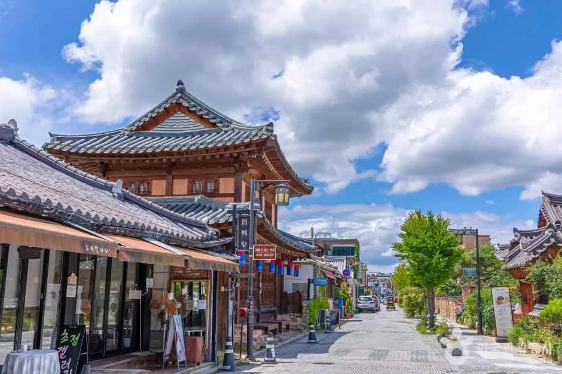
▲ 한옥 양식 건물이 이어지는 한옥마을 거리. 야행은 이 거리의 태조로 구간을 중심으로 이어진다 사진=한국관광공사
한옥마을 골목길 투어는 해설사와 함께 걷는 1시간 코스다. 경기전 입구에서 18:30·19:00·19:30·20:00에 출발한다. 공식 홈페이지는 이 프로그램과 후백제 왕궁 산성행에 구글 폼 방식의 사전예약 링크를 걸어두었고, 다른 프로그램에는 사전예약 링크가 없다. 인원 제한과 접수 마감 여부는 공식 예약 페이지에서 확인해야 한다.
사전예약 프로그램 신청은 공식 홈페이지 예약 페이지에서 확인할 수 있다. 공식 사전예약 페이지 바로가기
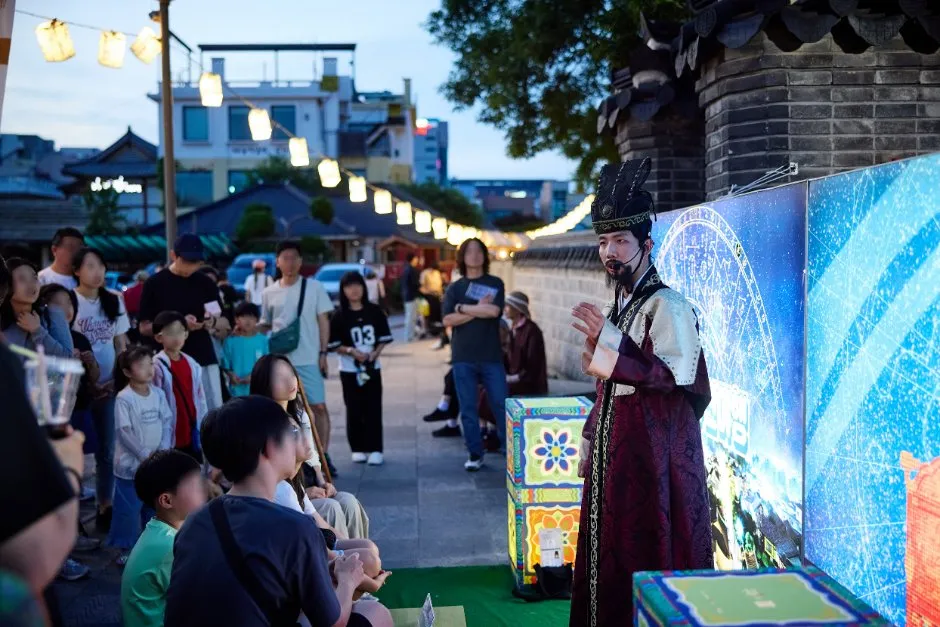
▲ 저녁 무렵 전통 복식 차림의 진행자가 관람객 앞에서 이야기를 들려주는 야외 현장. 한국관광공사가 '전주 국가유산야행'으로 게시한 사진(촬영 연도 미상) 사진=한국관광공사
📍 야행 구간 밖 '한 곳' 더 — 전동성당
경기전과 같은 태조로에 붙은 전주 전동성당(태조로 51)은 한국관광공사 좌표 기준 경기전에서 직선 약 80m다. 야행 공식 프로그램 장소는 아니지만, 한옥마을 도보 동선에 붙어 있어 야행을 보러 온 김에 들르는 코스로 많이 이용된다.
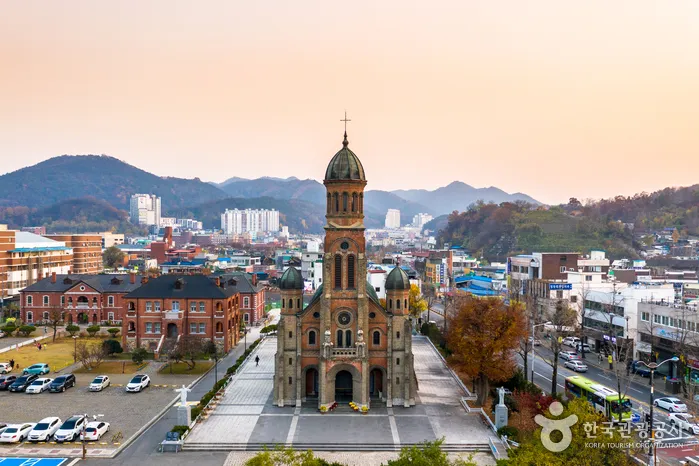
▲ 해 질 녘 전동성당과 주변 시가지. 한옥마을 도보 동선에 있어 야행 전후에 들르기 좋다 사진=한국관광공사
6. 야행 기간 주차·혼잡 — 확인된 것과 확인 못한 것
먼저 밝혀둘 점: 작성 시점(9월 29일) 기준으로 전주국가유산야행 기간의 교통통제 구간·야행 전용 셔틀·임시주차장은 공식 홈페이지, 전주시 관광 사이트, 보도자료에서 확인하지 못했다. 공식 '찾아오시는길' 페이지에는 경기전·전라감영 위치 정보만 있다. 따라서 아래 내용은 '평시 주차·셔틀 정보'와 '이 글의 권장'으로 나눠 읽어야 한다.
| 주차장 | 위치 | 규모·요금·운영 | 야행 방문 시 메모 |
|---|---|---|---|
| 제4공영주차장(구 대성주차장) | 춘향로 5299 | 636면·무료, 상시 셔틀은 오목대 승강장까지 약 2.5km 구간 | 규모는 가장 크나 셔틀 막차가 18:30이라 야행 귀가에는 도보 또는 택시 이동 계획이 필요 |
| 국립무형유산원 | 서학로 95 | 305면·무료, 서편 24시간·동편 07~21시 | 밤에는 24시간 운영되는 서편 이용. 경기전에서 직선 약 1km |
| 한옥마을 제1~3공영주차장 | 한옥마을 인근 | 24시간, 기본 30분 1,200원·추가 15분 600원·1일 최대 14,400원 | 도보 거리는 가장 짧지만 유료이고 야행 당일 조기 만차 가능성(추정) |
| 풍남초등학교 | 견훤왕궁로 16 | 300면, 주말·평일 방과 후 (기존 기사 기준) | 토요일 개방 여부·야간 출차 가능 여부 확인 필요 |
| 자연생태박물관·치명자산성지 등 | 바람쐬는길 일대 | 소규모, 24시간 | 대안 주차장. 만차 가능성 높음 |
위 표는 전주한옥마을 공식 '주차 및 셔틀버스 안내'와 한옥마을 무료주차장 10곳 기사의 정리를 야행 방문 관점으로 다시 묶은 것이다. 규모·요금·운영시간은 시기에 따라 바뀔 수 있어 전주한옥마을 공식 홈페이지에서 최신 정보를 함께 확인하는 것이 안전하다.
🚌 평시 셔틀은 야행 귀가에 쓸 수 없다
전주한옥마을 공식 안내에 따르면 무료 셔틀버스는 연중무휴 10:00~18:30(막차)에 제4공영주차장과 오목대 승강장 사이(약 2.5km)를 운행하고, 평일 1대·주말과 공휴일 4대가 투입된다(문의 063-239-2767). 야행이 22시까지 이어지는 만큼 제4공영주차장에 세우면 밤에는 셔틀 없이 돌아와야 할 수 있다. 야행 기간 셔틀 연장 운행이 있는지는 확인되지 않았다.
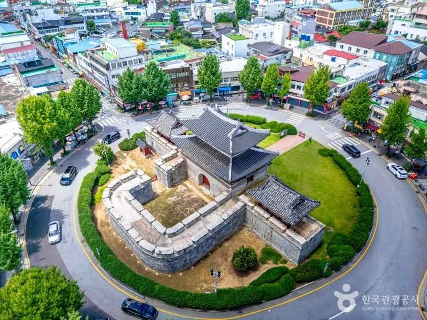
▲ 교차로 한가운데 놓인 풍남문과 주변 도심. 행사장 주변 도로는 야간에 보행자와 차량이 뒤섞일 수 있다 사진=한국관광공사
✅ 이 글이 권하는 '야간 주차 전략' (추정 포함)
· 16~17시 도착: 개막 행진(17:30) 전에 주차장 진입 — 공식 통제 정보가 없는 만큼 일찍 오는 것이 유일하게 확실한 대책
· 귀가 동선까지 계산: 셔틀이 끊긴 뒤에는 국립무형유산원 서편(24시간)처럼 도보 귀가가 가능한 주차장이 유리
· 귀가는 21시 30분 전 또는 22시 30분 이후로 분산 — 22시 종료 직후 출차가 몰릴 가능성이 높다(추정)
· 3일은 토요일이면서 개천절이라 평소 주말보다 방문객이 늘 수 있다(추정) — 3일에는 더 일찍 도착
7. 저녁 5시부터 밤 10시까지 — 자동차 여행자를 위한 모델 코스
공식 프로그램만 이어 붙이면 이런 동선이 나온다. 아래는 일정표의 시간을 기준으로 이 글이 조합한 예시이며, 실제 대기·이동 시간에 따라 조정이 필요하다.
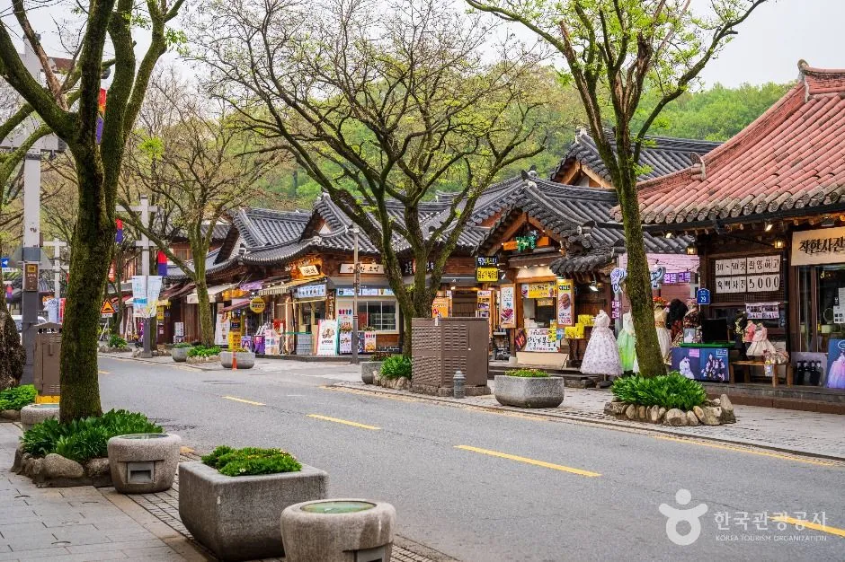
▲ 가로수와 한옥풍 건물이 이어지는 한옥마을 도로. 프로그램 장소 대부분이 이 일대에서 도보 이동 거리다 사진=한국관광공사
| 시각 | 할 일 | 비고 |
|---|---|---|
| 16:00~17:00 | 주차장 도착·주차, 한옥마을까지 도보 이동 | 귀가 동선(셔틀 막차 18:30) 고려 |
| 17:30~18:00 | 경기전 입구에서 '천년의 행진' 관람 | 태조로 일대 |
| 18:00~19:00 | 경기전 경내: 달빛 차회·풍류 한사발·싱잉볼(18:10) | 체험은 대기 발생 가능 |
| 19:00~20:00 | 골목길 투어(사전예약 시) 또는 풍남문 '뜻밖의 국악'(19시) | 투어 예약 확인 |
| 20:00~21:00 | 전라감영 국가유산 올림픽·전라관찰사의 탄생(20:00 단막극) | 21:30 종료 |
| 21:00~21:40 | 풍남문 국악(21시) 후 귀가 시작 | 귀가 분산 |
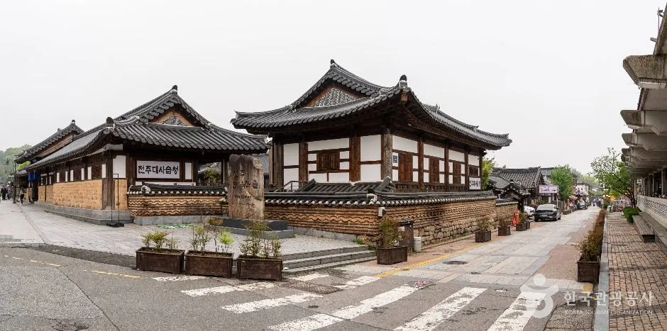
▲ 기와지붕 한옥이 모여 있는 한옥마을 길모퉁이. 골목길 투어는 이런 골목을 해설사와 함께 걷는다 사진=한국관광공사
8. 요약
2026 하반기 전주국가유산야행은 10월 2~3일 이틀간, 18:00~22:00(개막 행진은 17:30) 한옥마을·경기전·풍남문·전라감영 일원에서 열리고 관람료는 무료다(일부 체험·마켓은 유료 표기). 8개 분야 23개 프로그램 중 경기전에 프로그램이 가장 많고, 풍남문의 정시 국악, 전라감영의 올림픽·단막극, 골목길 투어와 후백제 산성행(사전예약)이 주요 동선을 이룬다. 검색되는 좀비실록·씨름대회·향교괴담·1박 2일은 10월 공식 일정표에 노출되지 않는다.
야행 기간의 교통통제·전용 셔틀 공지는 확인하지 못했고, 평시 셔틀 막차는 18:30이다. 16~17시 이른 도착, 귀가 동선을 고려한 주차장 선택(국립무형유산원 서편 등), 귀가 시간 분산이 현실적인 대책이다. 주차장 상세는 한옥마을 무료주차장 10곳 기사에서 볼 수 있다.